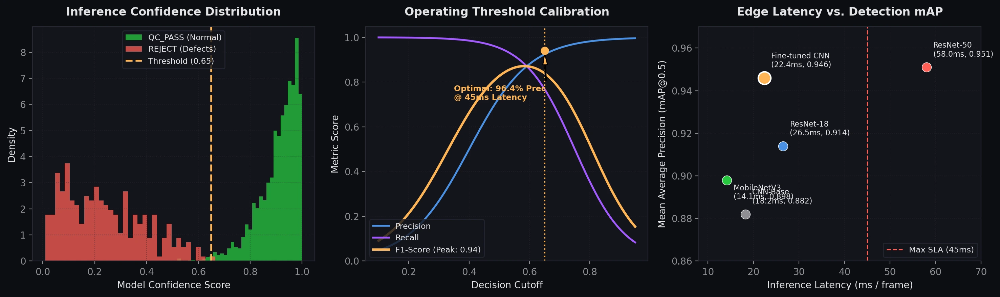

Statistical Model Diagnostics & Threshold Calibration
Bimodal confidence separation between normal frames and defective parts with a calibrated 0.65 decision threshold within edge-inference SLA.
Shailendra Khandekar
Data Scientist | Machine Learning | Agentic AI
Data scientist specializing in computer vision quality validation, machine learning, and agentic AI systems. I build reliable models and pipelines backed by verifiable real-world data.
10,000+ hrs
manufacturing video data processed & quality-checked
CV / ML
CNN, OpenCV, TensorFlow
Cloud
AWS, Google Cloud
Data Scientist · ML / CV Engineer · Applied AI
Bengaluru, India · Open to Full-Time / Remote
Video QC Pipelines, Error Analysis, Machine Learning
Python · OpenCV · TensorFlow · Scikit-Learn · AWS
Agentic AI · RAG · LangGraph · PostgreSQL
Bachelor of Pharmacy · Dr. C. V. Raman University (CGPA 7.0) · Coursework in Biostatistics, QA, and Clinical Research
Case study 1 · computer vision · data quality
Before a model is any good, the data has to be. Most of this work was making sure 10,000+ hours of manufacturing video was actually usable — validated, annotated, error-analysed — before it reached training.
Manufacturing video is expensive to capture and easy to ruin. Frames arrive occluded, mis-framed, mislabelled or duplicated — and every one of those defects gets baked into the model. The job was to process the volume and keep a defensible quality bar on the way through.
Error analysis was run against the dataset rather than the model: which defect classes kept recurring, which annotations drifted, and which segments of the line were under-represented.
placeholder / error-taxonomy
Your three most recurring defect classes go here — one line each, with the count you actually saw.
Case study 2 · machine learning · classification
A complete notebook: clean the data, look at it properly, engineer features, then compare six classifiers instead of shipping the first one that worked.
Target leakage note: The notebook derives IsActiveMember and HasCrCard from the Exited label. Results reflect pre-fix exploratory notebook output rather than a deployed production model.
9,996
rows after cleaning from 10,002
6
classifiers compared
94%
best accuracy 2,999-row test set
0.87
churn recall tuned SVM
| Model | Accuracy | Churn recall |
|---|---|---|
| Random Forest | 0.94 | 0.83 |
| SVM — tuned, C=1, rbf best recall | 0.94 | 0.87 |
| Logistic Regression | 0.92 | 0.86 |
| Voting — SVM + LR + RF | 0.93 | 0.86 |
| Bagging — RF, 50 estimators | 0.94 | 0.84 |
| Gradient Boosting | 0.94 | 0.86 |
Test support: 2,389 stayed · 610 churned. Recall on the churned class is the number that matters — accuracy is dominated by customers who stayed.
Four models tie at 94% accuracy, so accuracy is not the deciding factor. The tuned SVM recovers 0.87 of churners against Random Forest's 0.83 — about 24 more of the 610 churned customers caught per run. For a retention campaign with a fixed contact budget, catching more of the people who actually leave is worth more than a tie on accuracy.
The notebook derives IsActiveMember and HasCrCard from the Exited label. That is target leakage, and it would inflate every number above if shipped. I would rebuild both as genuine pre-exit features and re-run the comparison before trusting the result.
Experience entries pending in data/facts.json.
The site is the project. This assistant answers only from evidence — retrieval, then grounding, then an answer with its sources. Ask it something it has no evidence for and it will tell you.
GitHub · Curated
Curated implementations in computer vision, machine learning, and AI systems.
Grouped by area.
Academic scientific background and training in analytical quality assurance and biostatistics.
Dr. C. V. Raman University · Kota, Bilaspur (Chhattisgarh)
Relevant Coursework: Biostatistics · Quality Assurance (QA) · Clinical Research
My pharmaceutical sciences background instilled strict adherence to formal Quality Assurance (QA) protocols and statistical error analysis. I directly transfer this rigorous data hygiene mindset into computer vision dataset validation and machine learning pipeline integrity.
Notes
Best ways to reach me: email or LinkedIn.
↵ ask esc close answers only from verified evidence